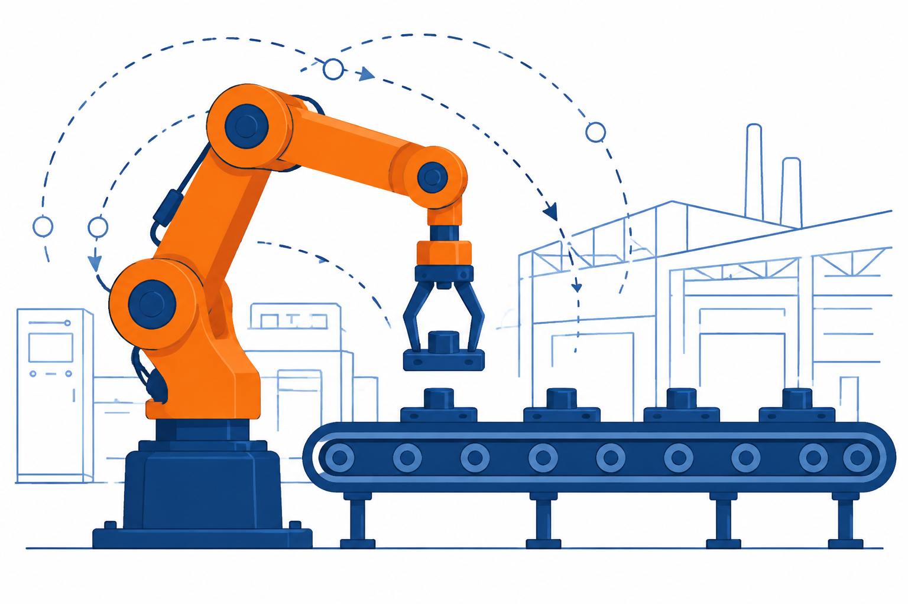
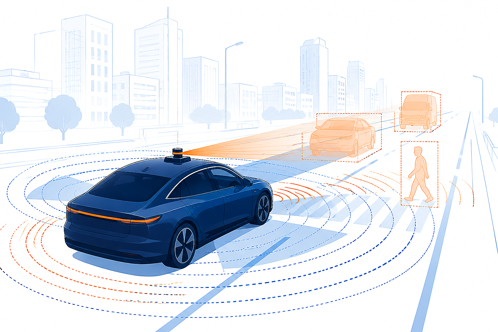

① 思想萌芽
古代 — 1788
➜
② 经典控制理论
1868 — 1948
➜
③ 现代与智能控制
1950s 末 — 今
1956
庞德里亚金（苏）
极大（小）值原理
1957
贝尔曼（美）
动态规划法
1958
卡尔曼（美）：滤波理论
与最优控制结合
状态空间法 → 现代控制形成
1970s
大系统理论
应对特大复杂系统
1980s — 今
智能控制：控制 × AI
（模糊 · 神经 · 学习）
机器人 · 无人驾驶 · 智能制造

工业机器人——现代控制理论的产业化应用

智能驾驶——控制理论与人工智能的深度融合
现代与智能控制要点
研究对象
多输入多输出、时变、非线性
系统
数学工具
状态空间法
（时域分析方法）
主要方法
最优控制、最优估计、系统辨识
等
回望：
从铜壶滴漏到智能驾驶——历经
经典控制、现代控制、大系统与智能控制
三个阶段。